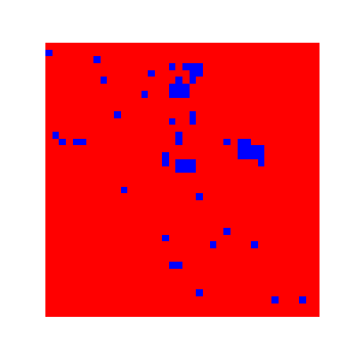
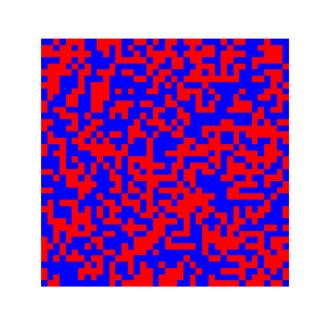
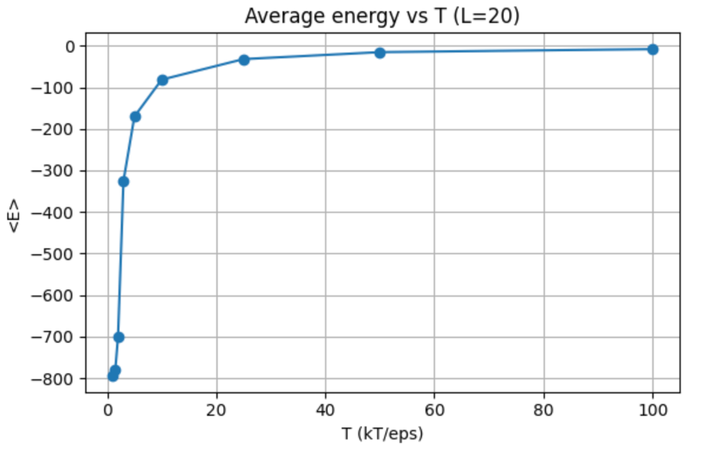

Computational physics · Python · Monte Carlo
Watching order emerge from random spins.
I programmed a two-dimensional Ising model to explore how temperature changes the behavior of interacting spins. The simulation turns a simple local rule into visible, system-wide behavior.
01 / The model
A grid of simple interactions.
Each site on a square lattice has a spin of +1 or −1. Neighboring spins affect the system's energy, and periodic boundaries connect opposite edges of the grid. I used the Metropolis algorithm to propose individual spin flips: a flip that lowers energy is accepted, while an energy-increasing flip may still be accepted depending on temperature.
02 / What the simulation shows
Low temperature and high temperature look different.
These animations use a 40 × 40 lattice. Each square represents one spin. At the lower temperature, larger regions of aligned spins persist. At the higher temperature, thermal fluctuations continually disrupt that order.


03 / Measuring the change
Average energy rises with temperature.
I also ran temperature sweeps on a 20 × 20 lattice. After allowing the model to settle at each temperature, I measured energy over repeated Monte Carlo sweeps. At low temperature, aligned neighbors produce an energy near the ordered-state limit. As temperature rises, the average energy moves toward zero.

04 / What I learned